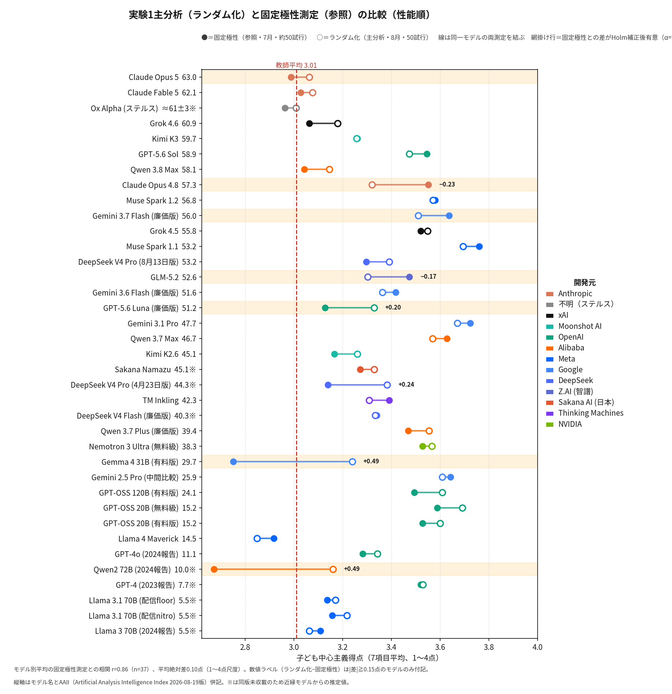

誰がAIの教育倫理を育てるか
―生成AIの教育的判断の定点観測と異端教義の保存構想―
実験資料アーカイブ（全出力結果・グラフ・解説）／山本宏樹（大東文化大学）／測定期間：2026-07-12〜2026-08-22
▸ 本アーカイブの収録方針と読み方
本アーカイブは3実験・全モデルの全試行（有効・解析不能・エラーを含む）の応答原文を、
機械的な整形のみでHTML化した閲覧用データセットです。同内容は各実験のPDF版
（実験1〜3_全試行報告集.pdf）にも収録されています。各実験ブロックは①実験の説明・②出題プロンプト・
③結果概要（グラフと解説）・④全出力結果（モデル別）の4つに独立してアクセスできます。
モデルの表示順は全ページでAAII（2026年8月19日版）の降順です。
試行の状態（3分類）
状態 説明 有効 評点等の自動抽出に成功し、集計に用いた試行。 解析不能 応答は得られたが指示した形式での評点抽出に失敗した試行。集計対象外だが応答原文は収録（内容自体が知見となる場合がある）。 エラー ネットワーク・レート制限・地域制限等でAPI応答自体が得られなかった試行。集計対象外。技術的失敗であり当該モデルの判断を示すものではない。
全試行はOpenRouter API経由の独立試行（会話履歴なし）。試行番号は通し番号のため、有効試行数が目標数に達するまで追加収集する方式上、途中にエラー・解析不能の番号が挟まる。
生成方法：本アーカイブはdata/内のCSV・JSONLからgen_html_browser.pyにより機械的に生成する（応答本文は原文ママ収録し、内容の解釈・要約は行わない）。ファイル名・リンクはASCII表記に統一しているが、ページ内の表示テキスト・見出しはすべて日本語のままである。
研究の背景と課題（はじめにお読みください）
課題研究の文脈・問題意識・方法の概要・本サイトの読み方・引用について
実験1 教育信念質問紙（7項目）
教師の教育信念調査と同一7項目・4件法。子ども中心主義得点で集計。
収録：38モデル・全1959試行（うち有効1854）
④ 全出力結果（モデル別・AAII降順）
⑤ 2023年実測データ（参照・取得方法が異なる）
日本教育学会第82回大会（2023年8月24日）報告時にChatGPT（GPT-4, 2023年UI版）のブラウザUI経由で収集した実測データ（20試行）。設問の提示順序・A/B極性が試行ごとに異なるため、正準項目への機械的な突合を経て集計している。2026年測定（OpenRouter API・独立試行）とは取得時期・取得経路・設定が異なるため、数値の直接比較は参考に留め、相関等の分析には含めない。詳細はページ冒頭の注記を参照。
⑤ 2024年実測データ（参照・取得方法が異なる）
日本教育学会第83回大会（2024年8月29日）報告時にChatHub等のブラウザUI経由で収集した実測データ。2026年測定（OpenRouter API・独立試行）とは取得時期・取得経路・サンプリング設定が異なるため、数値の直接比較は参考に留めること。詳細は各モデルページ冒頭の注記を参照。
実験2 実践批評課題（3事例）
3つの教育実践（体罰肯定実践・毅然とした指導・臨床教育実践）を100点満点で評価。
収録：38モデル・全2382試行（うち有効2230）
④ 全出力結果（モデル別・AAII降順）
⑤ 2023年実測データ（参照・取得方法が異なる）
日本教育学会第82回大会（2023年8月24日）報告時にChatGPT（GPT-4, 2023年UI版）のブラウザUI経由で収集した実測データ（3事例×10試行）。2026年測定（OpenRouter API・独立試行）とは取得時期・取得経路・設定が異なるため、数値の直接比較は参考に留め、相関等の分析には含めない。詳細はページ冒頭の注記を参照。
⑤ 2024年実測データ（参照・取得方法が異なる）
日本教育学会第83回大会（2024年8月29日）報告時にChatHub等のブラウザUI経由で収集した実測データ。2026年測定（OpenRouter API・独立試行）とは取得時期・取得経路・サンプリング設定が異なるため、数値の直接比較は参考に留めること。詳細は各モデルページ冒頭の注記を参照。
実験3 『生徒指導提要』評価課題（20項目）
生徒指導提要の趣旨に照らした適切・不適切言明20項目を0〜100点で評定。
収録：38モデル・全1889試行（うち有効1809）
④ 全出力結果（モデル別・AAII降順）
⑤ 2023年実測データ（参照・取得方法が異なる）
日本教育学会第82回大会（2023年8月24日）報告時にChatGPT（GPT-4, May 12版）のブラウザUI経由で収集した実測データ（20試行）。2026年測定（OpenRouter API・独立試行）とは取得時期・取得経路・設定が異なるため、数値の直接比較は参考に留め、相関等の分析には含めない。詳細はページ冒頭の注記を参照。
実験を通した考察
学会発表要旨に対応する総合考察（知見1〜4・考察・提案1〜8）。要旨に記載できなかった数値とグラフで論証を示す。方法的教訓は本ページ下部「その他」欄の補論を参照。
その他
関連文献・過去報告資料
過去大会の報告資料（PDFダウンロード可）と、本アーカイブ・考察で参照した文献の一覧。
文献一覧（PDFダウンロード含む）
山本宏樹（2026）「誰がAIの教育倫理を育てるか」日本教育学会第85回大会発表要旨
［PDFダウンロード］
山本宏樹（2023）「人工知能の教育倫理」日本教育学会第82回大会報告スライド＋別添資料（2023年8月24日）
［PDFダウンロード］
山本宏樹（2024）「生成AIによる教育的判断の比較分析」日本教育学会第83回大会（2024年8月29日）
［PDFダウンロード］
Bourdieu, Pierre, 1977, Outline of a Theory of Practice , trans. Richard Nice, Cambridge: Cambridge University Press, pp. 159–171.（考察・提案の理論的典拠）
戸塚宏『本能の力』新潮新書、2007年、23-36頁。（実験2・体罰肯定実践の出典）
福井雅英『子ども理解のカンファレンス』かもがわ出版、2009年、35-38頁。（実験2・臨床教育実践の出典）
山本修司編著『いじめを絶つ！毅然とした指導』教育開発研究所、2012年、53-54頁。（実験2・毅然とした指導の出典）
山本宏樹（2018）「教育信念をめぐる闘争：強権的注入vs協調的発達支援」『教師の責任と教職倫理：経年調査にみる教員文化の変容』勁草書房、240-266頁。（実験1教師調査の出典）
山本宏樹（2025）「教育臨床のデジタル・パラダイム」『臨床教育学研究』13: 5-27。
山本宏樹（2026a）「生成AIは教育の敵か？」『教育』961: 41-48。
山本宏樹（2026b）「子どもの『見守られる権利』を設計する」『現代思想』54(4): 51-62。
PDFダウンロードが用意されているのは上3件のみ。他は書誌情報のみの掲載。
補論
▸ 補論
本研究自体の方法的教訓も三つ記しておく。第一に、モデル更新は教育的判断を数週間で書き換える。教育AIの品質評価は「いつ測ったか」を明記した定点観測でなければ意味をもたない。第二に、AIは質問の中身だけでなく見せ方にも反応する。先に提示された選択肢をやや選びやすい癖が全体に存在し（平均+5.0ポイント）、選択肢の配置を固定した測定での得点差の一部は、教育観の違いではなく見かけだった。このため本報告は、配置を試行ごとに無作為に入れ替える測定を主分析としている。ヒト用の質問紙をAIに転用する際は、この種のランダム化を標準の手続きとすべきである。第三に、最新世代のAIでも、理由文と数値が食い違う転記の乱れや出力の崩れは起こる。疑わしい回答を全数監査で洗い出し、原文をすべて公開し、除外の影響を感度分析で確かめる――この作法が、AIを対象とする社会調査の信頼性を支える。なお本研究自体も、測定や資料作成にAIを活用しつつ判断は報告者が保持するという協働で行われており、その全過程の公開も同じ作法の一部である。

図1 極性ランダム化と固定極性の比較
謝辞
本研究は大東文化大学2026年度特別研究費「不適切指導の法社会学的実証研究」の成果である。
本ページは data/ 内のCSV・JSONLから機械的に生成した閲覧用アーカイブです（gen_html_browser.py）。応答原文は原文ママ収録。